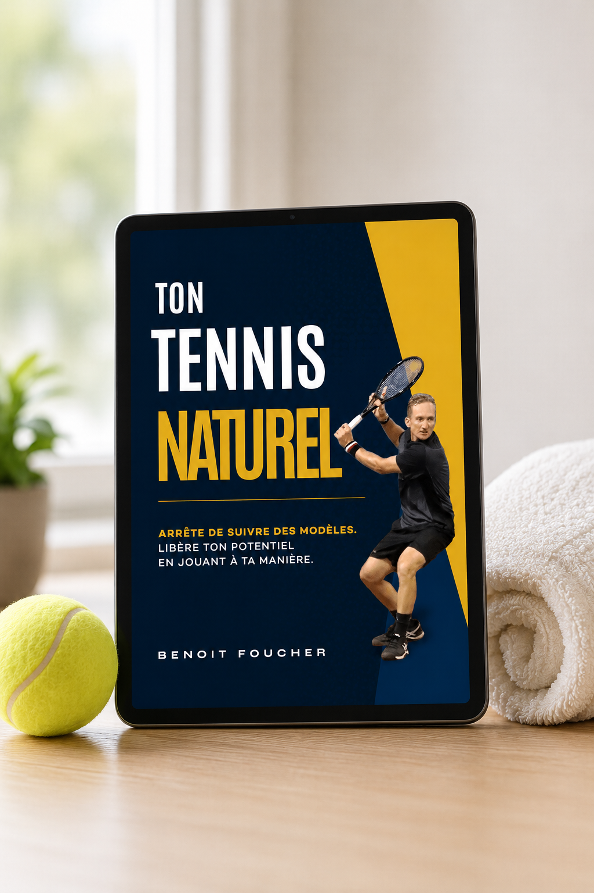

Ebook gratuit
Découvre pourquoi la technique des manuels te garde bloqué sur le même plateau, et le simple déclic qui permet aux amateurs engagés de jouer enfin avec une puissance naturelle et sans effort. Laisse tes coordonnées et je te l'envoie directement par email.

Ça te parle ?
Sur le court d'entraînement, ton jeu a fière allure. Ton coup droit est propre, ton timing est là, et pendant quelques jeux ça tient même en match. Puis le score se resserre, ton bras se crispe, tes jambes se figent, et la balle que tu as frappée dix mille fois part dehors.
Tu as passé des années à essayer de copier le coup droit parfait de Federer ou le revers de Djokovic, et tes mouvements te semblent toujours forcés, mécaniques, irréguliers. Tu perds contre des joueurs que tu battrais neuf fois sur dix à l'entraînement, et tu rejoues les points pendant tout le trajet du retour.
Alors tu fais ce que tu as toujours fait. Plus de cours. Plus d'heures. La technique d'un autre pro copiée sur YouTube. Pendant une semaine, ça semble différent. Puis te revoilà sur le même plateau, et au fond il y a cette question que tu ne dis pas à voix haute : c'est peut-être juste mon niveau.
Il existe une autre voie
La plupart des joueurs plafonnent non pas par manque de talent, mais parce qu'ils sont prisonniers d'un modèle unique. La vérité, c'est que ton corps possède déjà une signature. Le secret de la performance de haut niveau, ce n'est pas de copier un pro, c'est de découvrir tes propres préférences motrices : la façon dont ton système nerveux est câblé pour bouger.
Quand tu comprends ça, tout change. Tu arrêtes de lutter contre ta biologie et tu commences à jouer avec une puissance naturelle et sans effort. Ta technique cesse de sembler empruntée et devient la tienne, celle qui tient quand la pression est réelle.
C'est ça, Ton Tennis Naturel. C'est le fondement de ma façon de coacher chaque joueur, mis par écrit et simplifié pour les amateurs engagés qui en ont fini de copier et sont prêts à jouer leur propre jeu.

Qui est derrière
Je suis Benoit Foucher. J'ai passé ma vie autour du tennis de haute performance, comme joueur et comme coach, et cette approche, c'est ce que j'ai appris qui fonctionne vraiment.
Ce que tu vas en retirer
Ce qu'en disent les joueurs
« Benoit est un super coach, point. »
« Une connaissance profonde du tennis, et un accompagnement personnalisé plutôt que des règles rigides. Son approche intuitive et adaptative a amélioré ma technique, mon équilibre et mon jeu en général. »
« Je gagne, mais à aucun moment je ne pense à gagner. Je suis concentré sur quoi faire ensuite. Au final, le résultat n'est qu'une conséquence de la bonne attitude. »
Ton cadeau gratuit
L'approche complète, écrite pour les amateurs. Ça ne te coûte rien d'autre que ton email.
Pourquoi maintenant
C'est la saison des tournois, et les joueurs qui changent leur façon de s'entraîner maintenant sont ceux qui le ressentiront cet été. L'ebook est gratuit aujourd'hui. Le vrai coût, ce n'est pas l'argent, c'est une saison de plus passée à jouer un jeu qui n'a jamais été fait pour toi.
Aucun risque. C'est gratuit, c'est à toi pour toujours. Aucun paiement, aucun piège.
Reçois ton exemplaire
Laisse ton prénom et ton email ci-dessous et Ton Tennis Naturel arrive dans ta boîte mail dans les prochaines minutes.
Avant de partir
Les mêmes cours. Les mêmes heures. Les mêmes matchs où tout s'échappe, les mêmes défaites contre des joueurs que tu sais moins bons, et cette même petite voix qui te dit que c'est peut-être ton plafond. Rien ne change tout seul.
Tu as déjà le niveau. Tout le travail consiste à apprendre à jouer le jeu pour lequel ton corps est fait. Ça commence par un ebook gratuit, et un email.
P.S. Ton Tennis Naturel est gratuit, et c'est exactement le fondement sur lequel je construis chaque joueur. Laisse ton email ci-dessus et je te l'envoie maintenant.